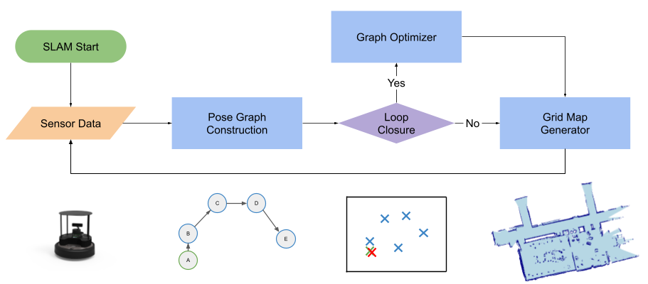
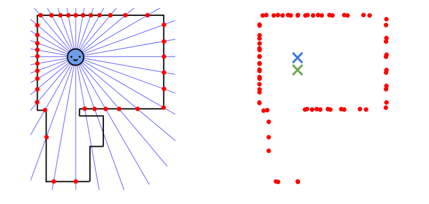
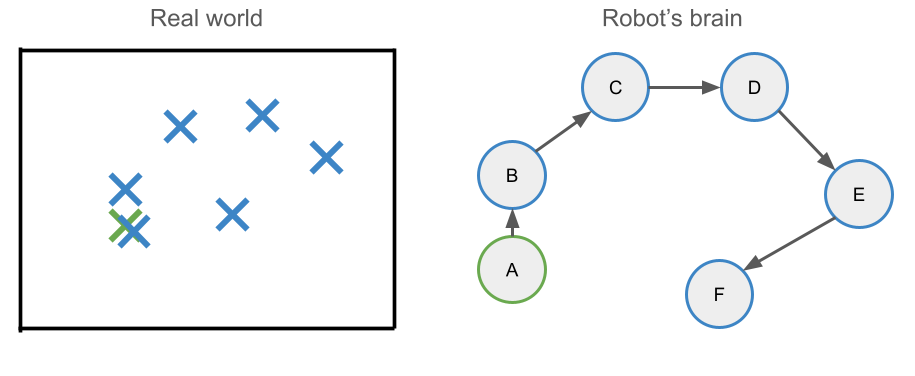
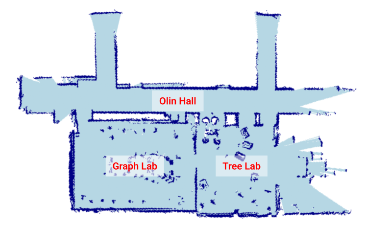

Our SLAM system uses LiDAR information, and a data structure called a "pose graph" to iterativley build a map of an unknwon environment. We also emply a process called "loop closure detection" to correct errors in the pose graph, by recognizing when the robot has returned to a location it has previsouly been in.

[TALK ABOUT BUILDING MAP FROM LiDAR SCANS]


